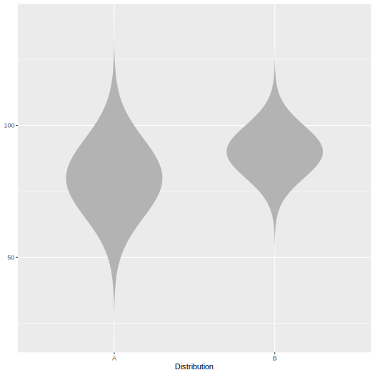

R/main.R
geom_normalviolin.RdCreates normal violins with specified means and standard deviations
geom_normalviolin(mapping = NULL, data = NULL, nsigma = 4, p_tail = 0, p_lower_tail = p_tail/2, p_upper_tail = p_tail/2, tail_fill = "black", tail_alpha = 0.4, width = 0.6, upper_limit = NA, lower_limit = NA, face_left = TRUE, face_right = TRUE, na.rm = FALSE, show.legend = NA, inherit.aes = TRUE, ...)
| mapping | Set of aesthetic mappings created by |
|---|---|
| data | The data to be displayed in this layer. There are three options: If A A |
| nsigma | The number of standard deviations each violin should extend |
| p_tail | The 2-tailed proportion that should be highlighted. Can be overridden with p_lower_tail and/or p_upper_tail |
| p_lower_tail | The proportion of the distribution that should be highlighted in the lower tail. Defaults to half of `p_tail`. |
| p_upper_tail | The proportion of the distribution that should be highlighted in the upper tail. Defaults to half of `p_tail`. |
| tail_fill | fill color for tails |
| tail_alpha | alpha value for tails |
| width | Width of normal violin |
| upper_limit | upper limit for polygons. Needed in case setting limits in scale_y_continuous or ylim distorts the polygons. |
| lower_limit | lower limit for polygons. Needed in case setting limits in scale_y_continuous or ylim distorts the polygons. |
| face_left | Display left half of violins. Defaults to `TRUE` |
| face_right | Display right half of violins. Defaults to `TRUE` |
| na.rm | If |
| show.legend | logical. Should this layer be included in the legends?
|
| inherit.aes | If |
| ... | Other arguments passed on to |
geom_normviolin understands the following aesthetics (required aesthetics are in bold):
x
mu (mean of the normal distribution)
sigma (standard deviation of the normal distribution)
width (width of violin)
nsigma (number of standard deviations to which the violins extend)
p_tail (2-tailed proportion of tails highlighted)
p_upper_tail (proportion of upper tails highlighted)
p_lower_tail (proportion of lower tails highlighted)
face_left (display left half of violin?)
face_right (display right half of violin?)
color
fill
alpha (of fills)
group
linetype
size (of lines)
library(ggplot2) library(ggnormalviolin) d <- data.frame( Distribution = c("A", "B"), Distribution_mean = c(80, 90), Distribution_sd = c(15, 10) ) ggplot(data = d, aes(x = Distribution)) + geom_normalviolin(aes(mu = Distribution_mean, sigma = Distribution_sd))